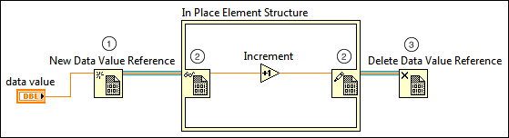

Storing Data and Reducing Data Copies with Data Value References
Because LabVIEW copies data frequently, applications with large data sets might experience slower performance and out of memory errors. You can help manage memory and avoid frequent data copies by using data value references to store large data sets.
The following block diagram shows how to access and operate on the data stored at the location the data value reference points to.

Use the New Data Value Reference function to accept and store any type of data and return a reference to that data. Because the reference points to the stored data, you can access the reference inside In Place Element structures, and LabVIEW does not make copies of the data.
Note��You can enable read-only access to the data value reference by right-clicking the border node on the right of the structure and selecting Allow
Parallel Read-Only Access. When the border node on the right is unwired, LabVIEW allows multiple, concurrent read-only operations and does not modify the data value reference.
Use the Delete Data Value Reference function to remove LabVIEW access to the data stored in the reference. This function deletes the reference but leaves the stored data intact.
Storing and Reducing Copies of External Data
External data value references are similar to data value references except they work directly with data owned by components external to LabVIEW, like the direct memory access (DMA) buffer of a device driver that controls a data-streaming device. You can work with this external data without incurring a copy to bring the data into LabVIEW. If a device driver supports an external data value reference, you can interact with the external data similarly to the way you interact with data value references. You also can use the Advanced TDMS VIs and functions to interact with external data value references.